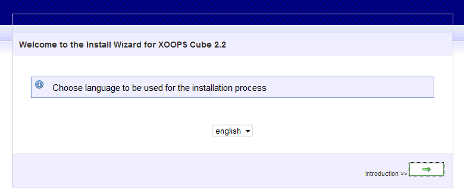
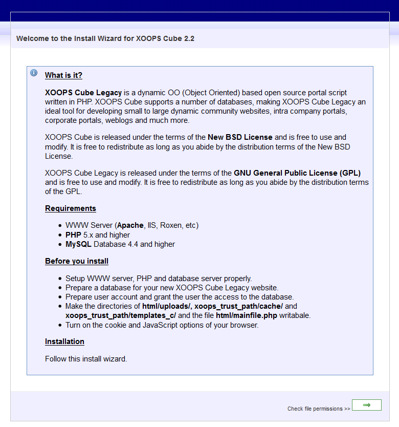
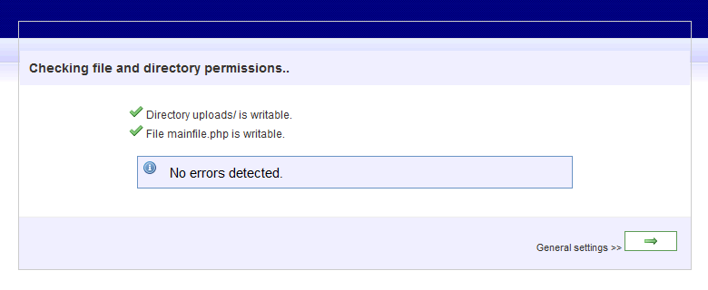
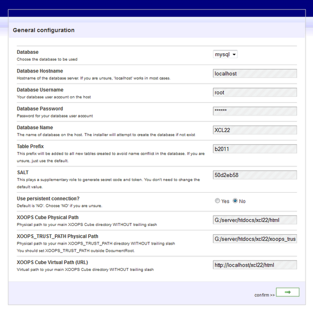
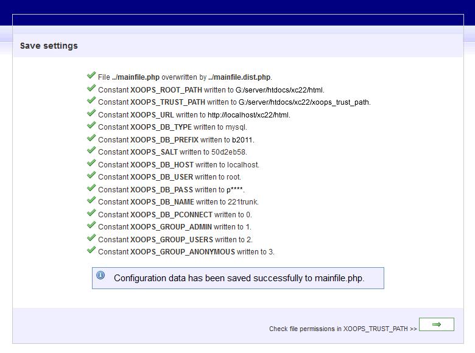
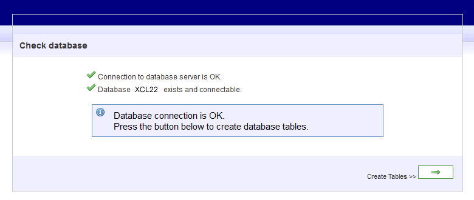
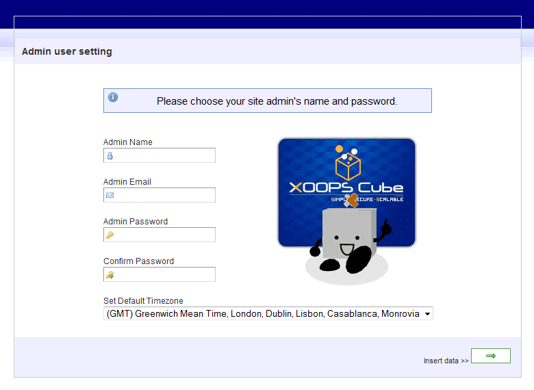
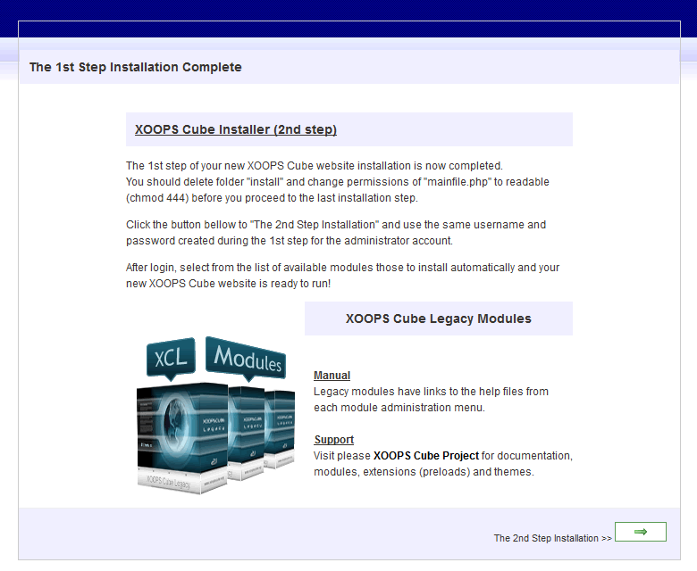

XOOPS Cube Legacy
Installation guide
- Created: 01/11/2011
- latest Update: 12/12/2011
- By: Xoops Cube
- xoopscube.sourceforge.net/site/index.php
- Email: xoopscube-modules@gmail.com
XOOPS Cube Legacy Installation Guide. If you have any questions that are beyond the scope of this help file, please feel free to join XOOPS Cube Project's community. Have Fun creating!
Preface
Before starting the installation process, we (the XOOPS Cube team) aim to provide the information you need to install and support XOOPS Cube Legacy.
Since XOOPS Cube Legacy is server based, we try to make it as easy to install as normal desktop software.
Get familiar with setting up and installing the software listed below.
Usually 80% of our support questions wind up being improper configurations with the server components or two pieces of software conflict.
Verify that your web server is configured to run the operations that are required by XOOPS Cube Legacy web application.
To install XOOPS Cube Legacy for the first time, we recommend you to have the following server software pre-installed:
- HTTP Server (Apache or IIS) "Note, XCL only officially supports Apache"
- PHP 5.x.x and higher
- MySQL Database 5.x.x and higher
Before starting the XOOPS Cube Legacy Installation Wizard, be sure to have:
- Setup the HTTP, PHP and MySQL database server properly.
-
Create a database for your XOOPS Cube Legacy installation
(Have your hosting company create one if you can't.
The install script does provide this capability with the proper privileges). - Setup a MySQL user account with the proper database permissions.
- Setup a FTP user account with proper permissions.
- The ability to set the directories and files permissions (world writeable, read/write, chmod 777).
- Enable cookies and JavaScript support in your browser.
Acquisition and Unpacking
Download the latest release package from the XOOPS Cube Legacy download page.
- Select either .gzip or .zip as you prefer.
- Create a logically named folder (e.g., xcl22-unpacked) on your local drive.
- Unpack (unzip) the XOOPS Cube Legacy package into the folder you create.
You can now get familiar with the XOOPS Cube Legacy folder/file structure
before running through the setup processs.
Folders and Files
All folders and files in the unzipped package are organized under a directory named after the current release.
You will install the files and folders contained within this directory (but not the full file tree);
do not install the container directory itself!
XOOPS Cube Legacy is designed to work exactly as the folders and files are organized in the unzipped package,
it is critical that you do not move, nor rename, any of the folders or files;
doing so will cause XOOPS Cube Legacy to not function.
The unzipped package will contain two directories that contents must be upload :
html/
xoops_trust_path/
The folders in the package are:
 docs
docs
Provides instruction on installing and upgrading, changelog and copyright notice.
extras
Provides common css framework, images, extra_interfaces (php class), extra_languages, modules, preload, themes installer-ftp, utility_tools.
html
All the core scripting and modules functionality is kept in this folder.
class
common
core
images
include
install
kernel
language
modules
preload
themes
uploads
 Files :
Files :
admin.php
backend.php
banners.php
edituser.php
favicon.ico
footer.php
header.php
image.php
imagemanager.php
index.php
lostpass.php
mainfile.dist.php
mainfile.php
misc.php
notifications.php
pmlite.php
readmsg.php
register.php
robots.txt
search.php
user.php
userinfo.php
viewpmsg.php
xoops.css
xoops_trust_path
XOOPS_TRUST_PATH was introduced by GIJOE (based on minahito’s idea as GIJOE credited).
The concept of XOOPS_TRUST_PATH is to secure a XOOPS Cube Legacy module by moving all of the module’s PHP files out of web root or DOCUMENT_ROOT.
The second benefit of using XOOPS_TRUST_PATH is that D3 modules duplication become easily manageable.
With the introduction of XOOPS_TRUST_PATH and duplicable modules – or Duplicable V3/D3, webmasters are free to duplicate and rename installed modules. A XOOPS Cube Legacy website can have many instances of the same module with each own template files and MySQL table files, and all run securely from a single module outside of the web root directory. So far there are many modules that take advantage of the idea, and most of Japanese developers release modules based on D3.
- The folder XOOPS_TRUST_PATH can be renamed to whatever name you wish.
- The module name under XOOPS_TRUST_PATH can not be changed.
- To differentiate the two instance of a module, you can customize template files
/!\ of Caution Using D3
The template files are centralized - if your UPDATE the module, the template files of all duplicated modules will be overwritten.
Local Installation
If you're running a local environment for development or testing, make sure that you have met the previous requirements.
Once this is done :
- copy the contents of the HTML directory to the root document path of your web environment.
- copy the contents of the XOOPS_TRUST_PATH directory to the root document path of your web environment.
- Create a database
Once the files are copied there, you can start the install by typing http://localhost/html/
This will start the install process.
Hosting platform
If you're running in a hosted environment, unpack the XOOPS Cube Legacy files locally or on the server if you have telnet or SSH access.
Once this is done :
- copy the contents of the HTML directory to the root document path of your web environment*
- copy the contents of the XOOPS_TRUST_PATH directory to the root document path of your web environment.
- Create a database
Once the files are copied there, you can start the install by typing http://my-site-domain.com/.
This will start the install process.
* your provider usually provides this location with directions.
Install Wizard
After performing the above procedures, you're ready to continue installing XOOPS Cube Legacy with the Install Wizard.
The first screen in the install Wizard takes you to will be the welcome screen.

Click the Next button to continue on to the next screen.

The next part of the install Wizard is designed to check your file and directory permissions.
If you're running in a Win32 environment, this should be a pretty painless install.
If you're running in a UNIX environment, the Wizard will display any problems and the corrective actions to take if there are problems.

If all lights are green on the Wizard, click Next to continue.
If not, please read the screen and perform the necessary actions recommended by the Wizard
The next part of the Wizard is for writing the settings to the mainfile.php file.

The General Settings screen is self explanatory so, input the required information into the form and click next.
The next four Wizard screens are informational displaying the settings from the General Settings screen
for your confirmation and to show that the values were written correctly.

If you seen any Red lights, please click the Back button to make the proper corrections.
The next Wizard screen is will be to show the progress for accessing the database.

If you're in a hosted environment without the proper access to create databases, please check with your provider for help in getting a database.
If your provider (or you) created the database, all lights should be green.
If you get a red light stating the DB does not exist and your user name has the ability to create databases, and then click next
and the install Wizard will attempt to create the database for you.
If your user id does not have the rights to create a database, please correct this and continue the install.
The next two screens are informational on trying to create and access the database.
Click Next or Back depending on the Wizard screen.
After clicking next a couple of times, you will come to an informational screen showing the results of table creation.
If there is a problem, please refer to the FAQ or XOOPS Cube Forums for further assistance.
If all lights are green, you're ready to proceed by clicking Next.
The next Wizard screen is for inputting site administrative information.

Please be careful here and write down or remember your administrative password.
You'll need this after the install to continue setting up your XOOPS Cube website.
Once you have completed inputting the correct information, click Next to continue.
* Note, try to refrain from using names with spaces for the Admin name.
The next screen is informational. If all the lights are green, click Next to continue.

Congratulations!
Your installation should now be complete. You can check the site out by clicking the "HERE" text on the last screen.
If all went well, then your new site should be up and running.
If not, please refer to the FAQ or XOOPS Cube Forums for further assistance.